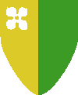

Scudo Ducale
Questo è lo scudo della famiglia ducale e quindi lo scudo generale che rappresenta il Ducato di Southland.
Tale scudo è utilizzato dalle truppe del Duca e in tutti i territori amministrati direttamente dalla famiglia ducale, fatta eccezione per Ranassance che data la sua storia e importanza ha uno scudo particolare sebbene sia una cittadella in pieno territorio ducale. Al centro dello scudo vi è il simbolo della famiglia ducale dei Sironia, un quadrifoglio simbolo della fertilità e di buon auspicio. Lo scudo è diviso in tre settori ognuno dei quali rappresenta una parte del Ducato. La parte superiore è di colore marrone e rappresenta le montagne, la parte centrale è di colore giallo grano e rappresenta le terre coltivate del ducato ed è preponderante. La parte inferiore è del colore del mare.
Questi sono i tre colori predominanti del Ducato e si ritrovano in quasi tutti gli scudi e gli stemmi, inoltre in segno di fedeltà ai Sironia molti nobili e comunità del Ducato hanno il quadrifoglio nel loro scudo.
Scudo della Baronia Altavalle
E' lo scudo della Baronia Altavalle, situata a nord-ovest del Ducato.
Si tratta dello scudo di una importante Baronia. La Baronia Altavalle si trova fra i monti a nord-est del Ducato, è un presidio militare molto importante per la difesa dei confini del ducato contro gli umanoidi abitanti i monti che in questo modo riescono solo con difficoltà a raggiungere le pianure del Ducato e a razziarne gli insediamenti. Data l'ubicazione fra i monti il colore preponderante dello scudo è il marrone.
Scudo della Baronia dei Colovia
Lo scudo della Baronia della famiglia Colovia, che si trova a sud-ovest del Ducato.
E' il territorio nobiliare più importante in quando comprende il terzo centro abitato del Ducato nonché porto di discrete proporzioni ossia la cittadella di Selinur. La roccaforte del Barone si trova però arroccata sui monti e svolge una funzione similare a quella della Baronia Altavalle, sui monti inoltre vi sono importanti miniere di ferro, argento e carbone, ciò spiega la preponderanza sullo scudo del marrone indicante i monti sul blu indicante il mare.
Scudo dell'abbazia di Serdon
E' lo scudo dell'abbazia tanatiana di Serdon che si trova arroccata sui monti fra la Baronia Altavalle e quella Colovia.
All'abbazia di Serdon la famiglia Sironia concesse in donazione permanente un vasto territorio. Arroccata sui monti e con un esercito proprio l'abbazia controlla i confini centrali del Ducato dalle incursioni umanoidi. Lo stemma è prettamente tanatiano senza alcun richiamo al Ducato. Lo sfondo bianco indica la purezza di Tanatos e la stella centrale rappresenta la croce di luce di Taurus e sta indicare la forza militare dell'abbazia. L'abbazia dispone di un proprio piccolo esercito famoso per la sua preparazione e fedeltà oltre che per la sua divisa formata da un mantello e un drappo bianco latte.
Scudo di Ranassance
Cittadella al centro del Ducato. borgo agricolo di primaria importanza e secondo centro abitato dopo Sinkros.
Ranassance è una cittadina di particolare bellezza architettonica (che ricorda i comuni del centro Italia come Siena). Ha avuto una storia e un'evoluzione particolare e i suoi abitanti si sono sempre sentiti differenti dal resto del Ducato sebbene fedeli allo stesso per questo motivo i Sironia hanno concesso loro (alla milizia civica e alle istituzioni locali) di utilizzare uno stemma diverso. L'intero scudo è giallo grano ad indicare l'estrazione rurale della cittadella e il quadrifoglio è blu ad indicare il lago su cui Ranassance si affaccia.
Scudo di Towerleaf

Comunità autonoma di elfi alti, di origine remota, oggi perfettamente integrata all'interno del Ducato.
Towerleaf che prende il nome dalla grande torre circolare di legno al centro del villaggio elfico, interamente coperta di rampicanti dalle foglie verdi, è una comunità di elfi alti che si governa autonomamente nel rispetto delle leggi Ducali. Lo scudo riporta la caratteristica partizione verticale utilizzata su Arelia quasi unicamente dagli elfi. La parte sinistra rappresenta la stretta unione al Ducato la parte destra, verde, rappresenta l'inscindibile legame della comunità con la foresta.